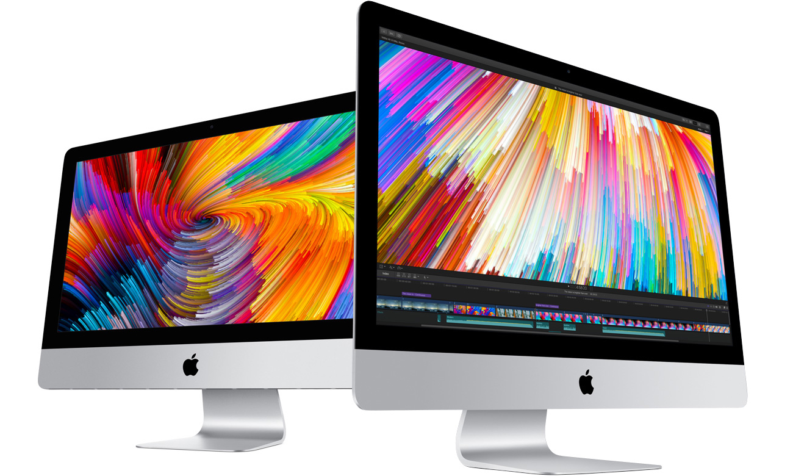
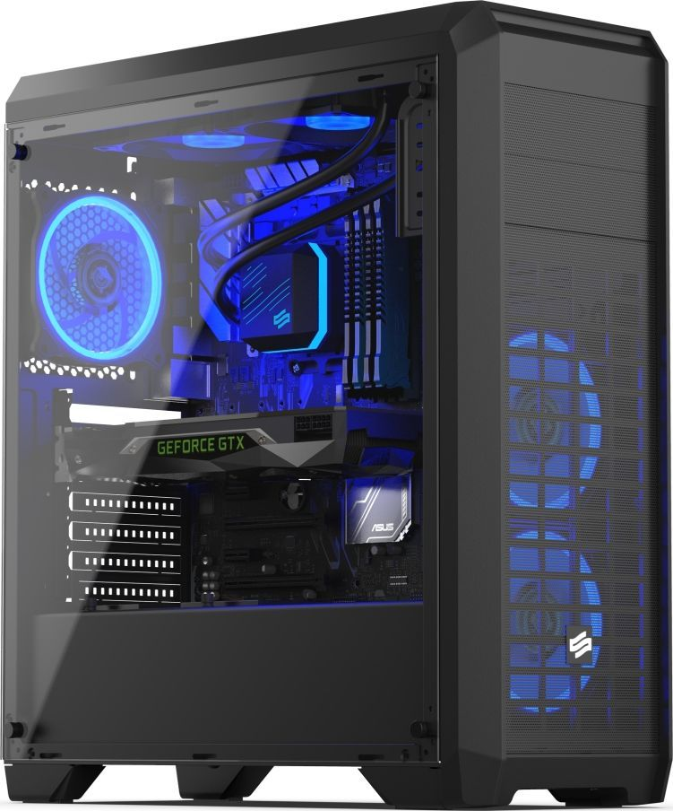

Montaż komputera z części komputerowych dla biura oraz dla gracza.
Co odróżnia komputer gracza od komputera dla biura? W komputerze do biura niepotrzebepujemy aż takiej wydajności np. najczęściej w takich komputerach nie ma karty graficznej oraz jest mniej pamięci RAM ponieważ nie jest to tak potrzebne w odróżnieniu do komputera przeznaczonego do gier który musi mieć wydajny procesor, karte graficzną i wiecej pamięci RAM ponieważ jest to niezbędne do płynnego działania gier.
Komputer dla biura: APPLE iMac 21,5"(4600zł)
- procesor Intel Core i5
- pamięć 8GB RAM
- dysk 1TB HDD
- system Mac OS

Komputer dla gracza(6990zł):
- procesor Intel Core i9
- pamięć 32GB RAM
- karta graficzna MSI RTX 2070
- dysk 500GB SSD
- system Windows 10
- obudowa SilentiumPC Regnum RG4T Pure Black RGB
